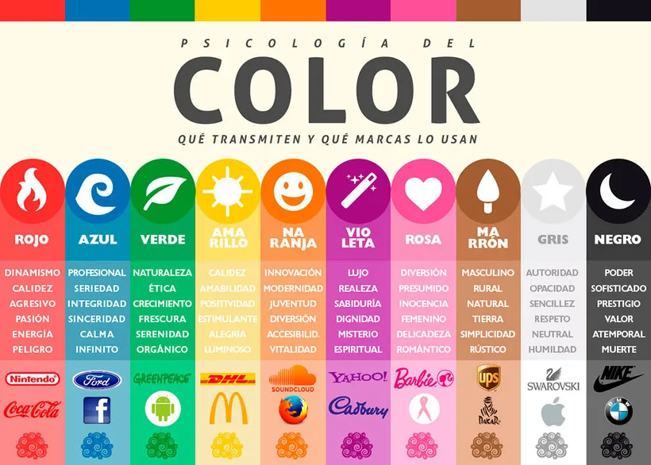

OUTSOURCING EL LENGUAJE DE LOS COLORES

|

Las personas en general somos criaturas visuales; esto es tan
importante que podemos el atractivo visual de un artículo es la principal
influencia en la decisión de compra de un consumidor. De hecho, el color,
la marca, la apariencia de un producto afecta el 93% de la decisión de compra.
Esto es seguido por la textura que afecta al 6% de la decisión de compra y
los sonidos y olores que afectan al 1% de la decisión de compra.
PATROCINADORES
- 1.MISION
- Ofrece una amplia cartera de servicios integrales y de calidad que estan siempre adaptadas a reunir los requerimientos especificos de cada Cliente.
- 2.VISION
- Ser una empresa de confianza identificada por sus soluciones innovadoras y la eficiencia de sus servicios, gracias a la excelencia de sus proyectos y obras
- 3.VALORES
- Fundamenta su filosofia en el profesionalismo y en la honestidad, permitiendo que la gestion de negocios sea para cada cliente un trabajo especial.
- 4.HISTORIA
- El primero en definir los colores fue el filósofo Aristóteles. Alrededor del siglo IV A.C., estableció que todos los colores se formaban por la mezcla de únicamente cuatro básicos. Estos eran el color tierra, el agua, el fuego y el cielo, los cuales estaban además en perfecta armonía con los cuatro elementos que regían el planeta. Añadió también que la luz y la sombra podían afectar a estos colores, ya fuera oscureciéndolos o aclarándolos, dando lugar a ciertas variaciones.
Convenios
Comenta :

Escucha los foros :

Aprende en:
CONTACTENOS
Comenta y siguenos en: 
BIBLIOGRAFIA:
 Web Maestro: Yojana Sierra
Web Maestro: Yojana Sierra